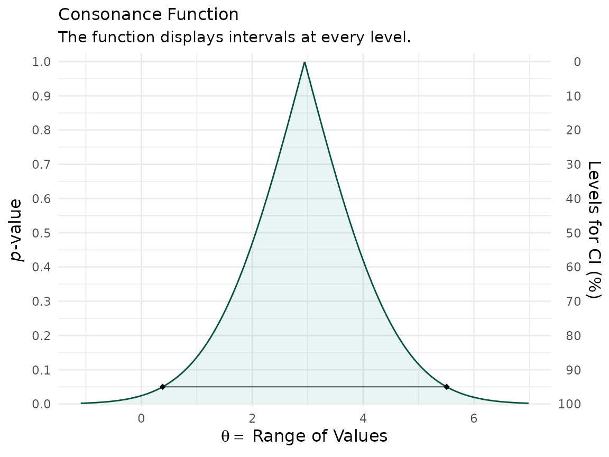
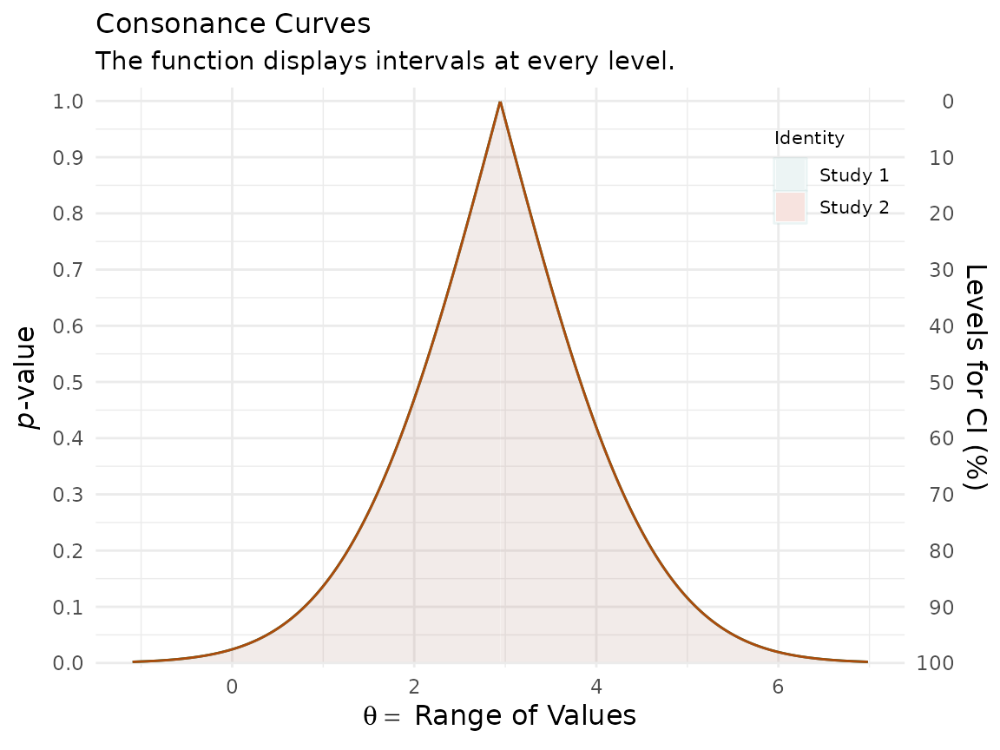
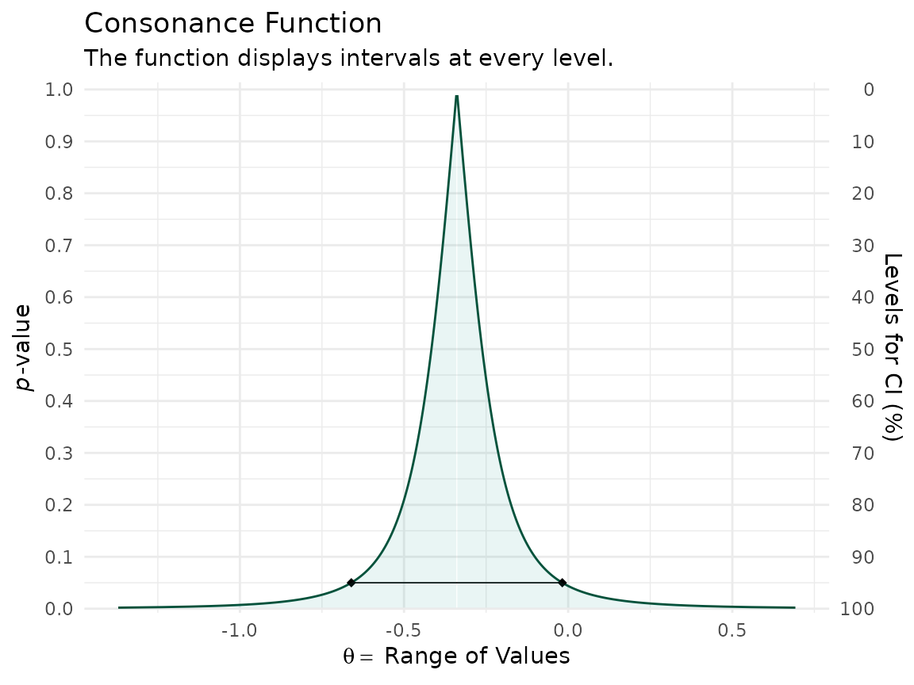
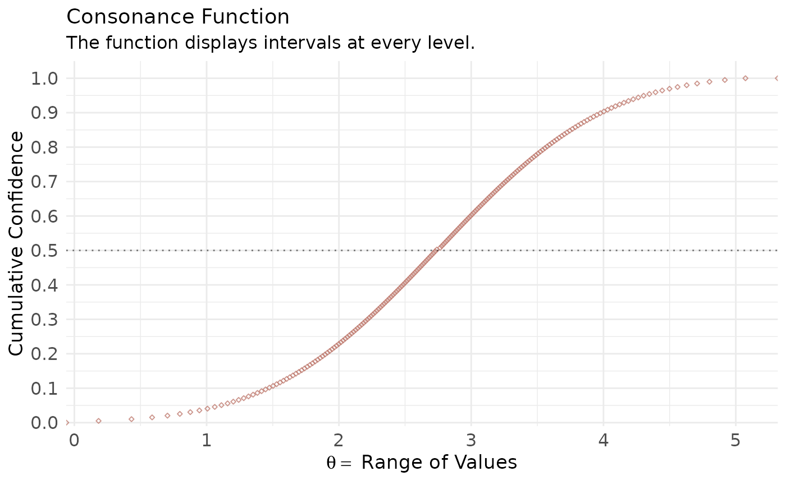

Simple Data Structures
Here, we’ll use an example dataset taken from the metafor
website, which also hosts the very famous metafor
package.1
library(metafor)
#> Loading required package: Matrix
#> Loading required package: metadat
#> Loading required package: numDeriv
#>
#> Loading the 'metafor' package (version 5.0-1). For an
#> introduction to the package please type: help(metafor)
library(concurve)
#> Please see the documentation on https://data.lesslikely.com/concurve/ or by typing `help(concurve)`
library(ggplot2)
dat.hine1989
#> study source n1i n2i ai ci
#> 1 1 Chopra et al. 39 43 2 1
#> 2 2 Mogensen 44 44 4 4
#> 3 3 Pitt et al. 107 110 6 4
#> 4 4 Darby et al. 103 100 7 5
#> 5 5 Bennett et al. 110 106 7 3
#> 6 6 O'Brien et al. 154 146 11 4I will quote Wolfgang (the creator of the metafor
package) here, since he explains it best,
“As described under help(dat.hine1989), variables n1i and n2i are the number of patients in the lidocaine and control group, respectively, and ai and ci are the corresponding number of deaths in the two groups. Since these are 2×2 table data, a variety of different outcome measures could be used for the meta-analysis, including the risk difference, the risk ratio (relative risk), and the odds ratio (see Table III). Normand (1999) uses risk differences for the meta-analysis, so we will proceed accordingly. We can calculate the risk differences and corresponding sampling variances with:
dat <- escalc(measure = "RD", n1i = n1i, n2i = n2i, ai = ai, ci = ci, data = dat.hine1989)
dat
#>
#> study source n1i n2i ai ci yi vi
#> 1 1 Chopra et al. 39 43 2 1 0.0280 0.0018
#> 2 2 Mogensen 44 44 4 4 0.0000 0.0038
#> 3 3 Pitt et al. 107 110 6 4 0.0197 0.0008
#> 4 4 Darby et al. 103 100 7 5 0.0180 0.0011
#> 5 5 Bennett et al. 110 106 7 3 0.0353 0.0008
#> 6 6 O'Brien et al. 154 146 11 4 0.0440 0.0006“Note that the yi values are the risk differences in terms of proportions. Since Normand (1999) provides the results in terms of percentages, we can make the results directly comparable by multiplying the risk differences by 100 (and the sampling variances by ):
dat$yi <- dat$yi * 100
dat$vi <- dat$vi * 100^2We can fit a fixed-effects model with the following
fe <- rma(yi, vi, data = dat, method = "FE")Now that we have our metafor object, we can compute the
consonance function using the curve_meta() function.
fecurve <- curve_meta(fe, cores = 1L)Now we can graph our function.
ggcurve(fecurve[[1]], nullvalue = TRUE)
#> Warning: Using `size` aesthetic for lines was deprecated in ggplot2 3.4.0.
#> ℹ Please use `linewidth` instead.
#> ℹ The deprecated feature was likely used in the concurve package.
#> Please report the issue at <https://github.com/zadrafi/concurve/issues>.
#> This warning is displayed once per session.
#> Call `lifecycle::last_lifecycle_warnings()` to see where this warning was
#> generated.
We used a fixed-effects model here, but if we wanted to use a random-effects model, we could do so with the following, where we can specify a restricted maximum likelihood estimator (REML) for the random-effects model
re <- rma(yi, vi, data = dat, method = "REML")And then we could use curve_meta() to get the relevant
list
recurve <- curve_meta(re, cores = 1L)Now we can plot our object.
ggcurve(recurve[[1]], nullvalue = TRUE)
We could also compare our two models to see how much consonance/overlap there is
curve_compare(fecurve[[1]], recurve[[1]], plot = TRUE)
#> [1] "AUC = Area Under the Curve"
#> [[1]]
#>
#>
#> | AUC 1| AUC 2| Shared AUC| AUC Overlap (%)| Overlap:Non-Overlap AUC Ratio|
#> |-----:|-----:|----------:|---------------:|-----------------------------:|
#> | 2.084| 2.084| 2.084| 100| Inf|
#>
#> [[2]]
The results are practically the same and we cannot actually see any difference, and the AUC % overlap also is consisten with this.
Complex Data Structures
concurve can also handle complex data structures from
metafor that are clustered.
### copy data from Berkey et al. (1998) into 'dat'
dat <- dat.berkey1998
### construct list of the variance-covariance matrices of the observed outcomes for the studies
V <- lapply(split(dat[, c("v1i", "v2i")], dat$trial), as.matrix)
### construct block diagonal matrix
V <- bldiag(V)
### fit multivariate model
res <- rma.mv(yi, V, mods = ~ outcome - 1, random = ~ outcome | trial, struct = "UN", data = dat)
### results based on sandwich method
(a <- robust(res, cluster = dat$trial))
#>
#> Multivariate Meta-Analysis Model (k = 10; method: REML)
#>
#> Variance Components:
#>
#> outer factor: trial (nlvls = 5)
#> inner factor: outcome (nlvls = 2)
#>
#> estim sqrt k.lvl fixed level
#> tau^2.1 0.0327 0.1807 5 no AL
#> tau^2.2 0.0117 0.1083 5 no PD
#>
#> rho.AL rho.PD AL PD
#> AL 1 - 5
#> PD 0.6088 1 no -
#>
#> Test for Residual Heterogeneity:
#> QE(df = 8) = 128.2267, p-val < .0001
#>
#> Number of estimates: 10
#> Number of clusters: 5
#> Estimates per cluster: 2
#>
#> Test of Moderators (coefficients 1:2):¹
#> F(df1 = 2, df2 = 3) = 41.6138, p-val = 0.0065
#>
#> Model Results:
#>
#> estimate se¹ tval¹ df¹ pval¹ ci.lb¹ ci.ub¹
#> outcomeAL -0.3392 0.1010 -3.3597 3 0.0437 -0.6605 -0.0179 *
#> outcomePD 0.3534 0.0675 5.2338 3 0.0136 0.1385 0.5683 *
#>
#> ---
#> Signif. codes: 0 '***' 0.001 '**' 0.01 '*' 0.05 '.' 0.1 ' ' 1
#>
#> 1) results based on cluster-robust inference (var-cov estimator: CR1,
#> approx t/F-tests and confidence intervals, df: residual method)
l <- concurve::curve_meta(res, method = "uni", robust = TRUE, cluster = dat$trial, adjust = TRUE, steps = 1000, cores = 1L)
ggcurve(data = l[[1]], type = "c") +
ggplot2::theme_minimal()
The interval function is quite narrow because there were so many iterations that were set by us.
Here, we simulate a more complicated set of trials using the
simstudy package.
library(simstudy)
library(parallel)
library(nlme)
library(data.table)
#>
#> Attaching package: 'data.table'
#> The following object is masked from 'package:concurve':
#>
#> :=
#> The following object is masked from 'package:base':
#>
#> %notin%
library(metafor)
library(concurve)
defS <- defData(varname = "a.k", formula = 3, variance = 2, id = "study")
defS <- defData(defS, varname = "d.0", formula = 3, dist = "nonrandom")
defS <- defData(defS, varname = "v.k", formula = 0, variance = 6, dist= "normal")
defS <- defData(defS, varname = "s2.k", formula = 16, variance = .2, dist = "gamma")
defS <- defData(defS, varname = "size.study", formula = ".3;.5;.2", dist = "categorical")
defS <- defData(defS, varname = "n.study",
formula = "(size.study==1) * 20 + (size.study==2) * 40 + (size.study==3) * 60",
dist = "poisson")
defI <- defDataAdd(varname = "y", formula = "a.k + x * (d.0 + v.k)", variance = "s2.k")
RNGkind(kind = "L'Ecuyer-CMRG")
set.seed(1031)
ds <- genData(12, defS)
ds
#> Key: <study>
#> study a.k d.0 v.k s2.k size.study n.study
#> <int> <num> <num> <num> <num> <int> <int>
#> 1: 1 4.745069 3 -5.1399796 16.275358 2 38
#> 2: 2 1.983020 3 -3.2693291 13.976232 3 66
#> 3: 3 1.865846 3 1.9742469 8.332148 2 40
#> 4: 4 4.235730 3 -3.2126873 11.100117 2 40
#> 5: 5 4.246219 3 -0.5858786 13.765175 3 57
#> 6: 6 3.899617 3 4.6808278 7.532707 2 41
#> 7: 7 3.059236 3 -5.9924638 7.817771 1 14
#> 8: 8 2.324586 3 5.7588246 10.970013 3 56
#> 9: 9 3.857260 3 -1.1081854 24.039016 3 75
#> 10: 10 4.308413 3 -1.9081253 14.084537 1 24
#> 11: 11 1.607899 3 0.2178001 8.271145 2 48
#> 12: 12 3.717728 3 1.8818612 11.274497 3 67
dc <- genCluster(ds, "study", "n.study", "id", )
dc <- trtAssign(dc, strata = "study", grpName = "x")
dc <- addColumns(defI, dc)
d.obs <- dc[, .(study, id,s2.k, x, y)]
d.obs <- as.data.frame(d.obs)
res <- rma.mv(yi = y, V = s2.k, mods = ~ factor(study) + factor(x), random = ~ factor(x) | study, struct="CS", data = d.obs, method = "REML")
a <- curve_meta(x = res, measure = "default", method = "mv", parm = "factor(x)1", cores = 1L)
ggcurve(a[[2]], type = "cdf")
Cite R packages
Please remember to cite the packages that you use.
citation("concurve")
#> To cite package 'concurve' in publications use:
#>
#> Rafi Z, Vigotsky A (2026). _concurve: Computes and Plots
#> Compatibility (Confidence) Intervals, P-Values, S-Values, &
#> Likelihood Intervals to Form Consonance, Surprisal, & Likelihood
#> Functions_. R package version 3.0.0,
#> <https://CRAN.R-project.org/package=concurve>.
#>
#> Rafi Z, Greenland S (2020). "Semantic and Cognitive Tools to Aid
#> Statistical Science: Replace Confidence and Significance by
#> Compatibility and Surprise." _BMC Medical Research Methodology_,
#> *20*, 244. ISSN 1471-2288. doi:10.1186/s12874-020-01105-9
#> <https://doi.org/10.1186/s12874-020-01105-9>.
#> <https://doi.org/10.1186/s12874-020-01105-9>.
#>
#> To see these entries in BibTeX format, use 'print(<citation>,
#> bibtex=TRUE)', 'toBibtex(.)', or set
#> 'options(citation.bibtex.max=999)'.
citation("ggplot2")
#> To cite ggplot2 in publications, please use
#>
#> H. Wickham. ggplot2: Elegant Graphics for Data Analysis.
#> Springer-Verlag New York, 2016.
#>
#> A BibTeX entry for LaTeX users is
#>
#> @Book{,
#> author = {Hadley Wickham},
#> title = {ggplot2: Elegant Graphics for Data Analysis},
#> publisher = {Springer-Verlag New York},
#> year = {2016},
#> isbn = {978-3-319-24277-4},
#> url = {https://ggplot2.tidyverse.org},
#> }
citation("metafor")
#> To cite the metafor package in publications, please use:
#>
#> Viechtbauer, W. (2010). Conducting meta-analyses in R with the
#> metafor package. Journal of Statistical Software, 36(3), 1-48.
#> https://doi.org/10.18637/jss.v036.i03
#>
#> A BibTeX entry for LaTeX users is
#>
#> @Article{,
#> title = {Conducting meta-analyses in {R} with the {metafor} package},
#> author = {Wolfgang Viechtbauer},
#> journal = {Journal of Statistical Software},
#> year = {2010},
#> volume = {36},
#> number = {3},
#> pages = {1--48},
#> doi = {10.18637/jss.v036.i03},
#> }
citation("simstudy")
#> To cite simstudy in publications, please use:
#>
#> Goldfeld K, Wujciak-Jens J (2020). "simstudy: Illuminating research
#> methods through data generation." Journal of Open Source Software,
#> 5(54), 2763. doi:10.21105/joss.02763 (URL:
#> https://doi.org/10.21105/joss.02763).
#>
#> A BibTeX entry for LaTeX users is
#>
#> @Article{,
#> title = {simstudy: Illuminating research methods through data generation},
#> author = {Keith Goldfeld and Jacob Wujciak-Jens},
#> publisher = {The Open Journal},
#> journal = {Journal of Open Source Software},
#> year = {2020},
#> volume = {5},
#> number = {54},
#> pages = {2763},
#> url = {https://doi.org/10.21105/joss.02763},
#> doi = {10.21105/joss.02763},
#> }
citation("nlme")
#> To cite package 'nlme' in publications use:
#>
#> Pinheiro J, Bates D, R Core Team (2026). _nlme: Linear and Nonlinear
#> Mixed Effects Models_. doi:10.32614/CRAN.package.nlme
#> <https://doi.org/10.32614/CRAN.package.nlme>. R package version
#> 3.1-169, <https://CRAN.R-project.org/package=nlme>.
#>
#> Pinheiro JC, Bates DM (2000). _Mixed-Effects Models in S and S-PLUS_.
#> Springer, New York. doi:10.1007/b98882
#> <https://doi.org/10.1007/b98882>.
#>
#> To see these entries in BibTeX format, use 'print(<citation>,
#> bibtex=TRUE)', 'toBibtex(.)', or set
#> 'options(citation.bibtex.max=999)'.
citation("data.table")
#> To cite package 'data.table' in publications use:
#>
#> Barrett T, Dowle M, Srinivasan A, Gorecki J, Chirico M, Hocking T,
#> Schwendinger B, Krylov I (2026). _data.table: Extension of
#> `data.frame`_. R package version 1.18.4, <https://r-datatable.com>.
#>
#> A BibTeX entry for LaTeX users is
#>
#> @Manual{,
#> title = {data.table: Extension of `data.frame`},
#> author = {Tyson Barrett and Matt Dowle and Arun Srinivasan and Jan Gorecki and Michael Chirico and Toby Hocking and Benjamin Schwendinger and Ivan Krylov},
#> year = {2026},
#> note = {R package version 1.18.4},
#> url = {https://r-datatable.com},
#> }
citation("parallel")
#> The 'parallel' package is part of R. To cite R in publications use:
#>
#> R Core Team (2026). _R: A Language and Environment for Statistical
#> Computing_. R Foundation for Statistical Computing, Vienna, Austria.
#> doi:10.32614/R.manuals <https://doi.org/10.32614/R.manuals>.
#> <https://www.R-project.org/>.
#>
#> A BibTeX entry for LaTeX users is
#>
#> @Manual{,
#> title = {R: A Language and Environment for Statistical Computing},
#> author = {{R Core Team}},
#> organization = {R Foundation for Statistical Computing},
#> address = {Vienna, Austria},
#> year = {2026},
#> doi = {10.32614/R.manuals},
#> url = {https://www.R-project.org/},
#> }
#>
#> We have invested a lot of time and effort in creating R, please cite it
#> when using it for data analysis. See also 'citation("pkgname")' for
#> citing R packages.